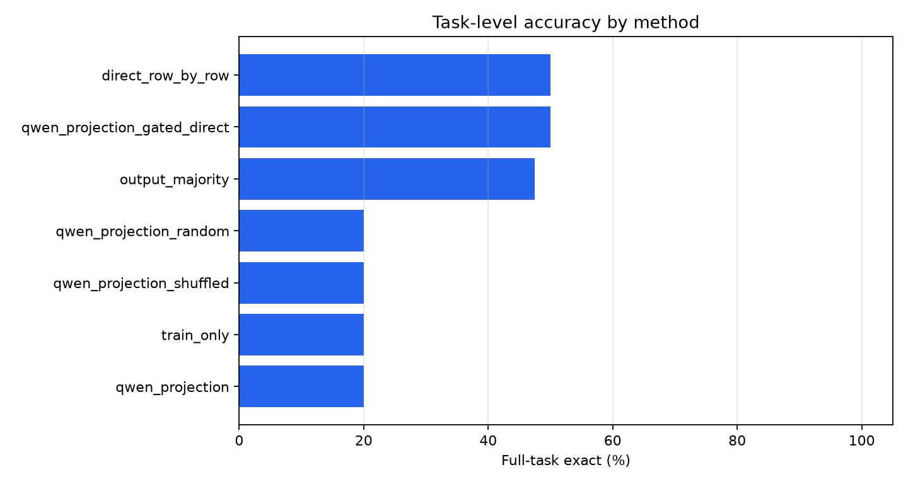
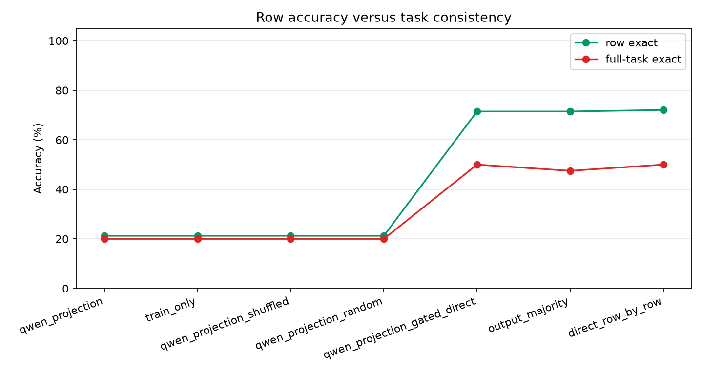
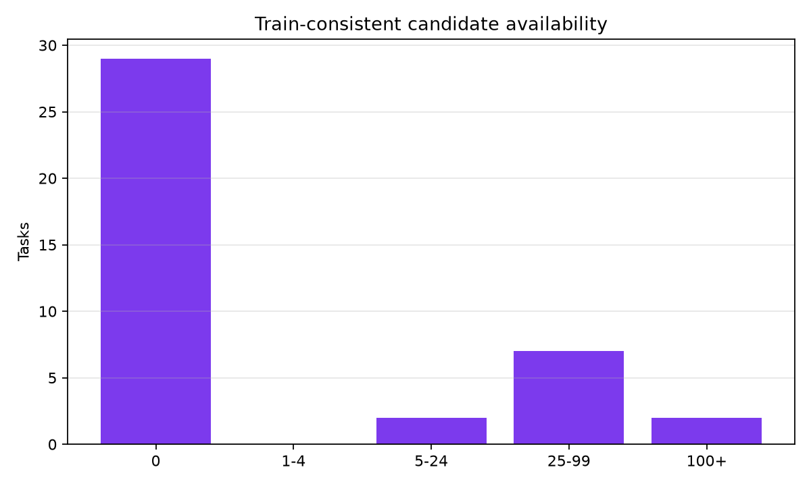
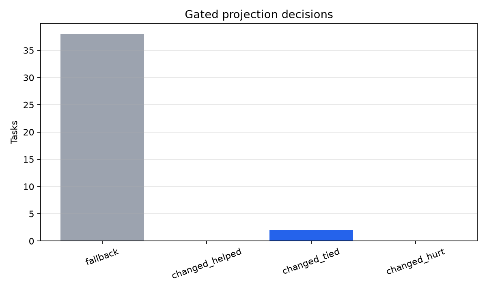
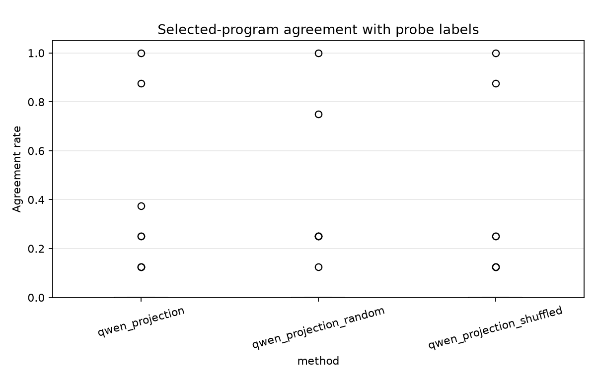
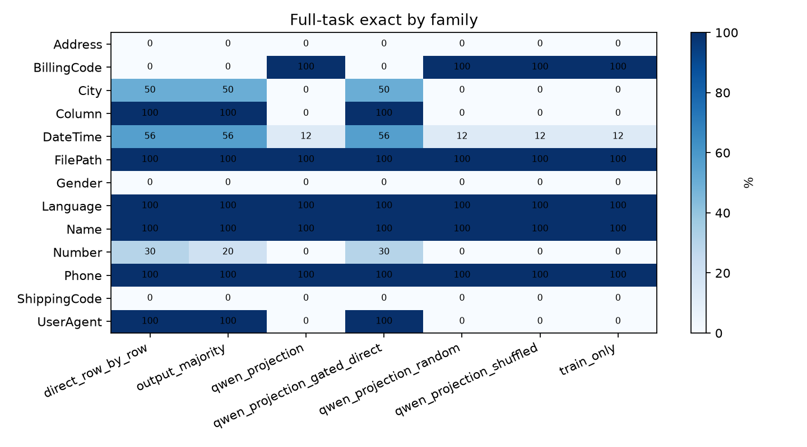

Can noisy row-level model guesses be converted into a stable task-level deterministic transformation?
The experiment generates counterexample-style probe inputs from each task's training examples, labels those probes with a row-level model, and selects among train-consistent deterministic expressions using probe-label agreement plus a small complexity penalty. The selected expression is then evaluated on held-out rows from the same public transformation tasks.
- Benchmark root: `/workspace/large_artifacts/qwen_counterexample_guided_projection/prose-benchmarks`
- Run: `main_qwen_probe_40`
- Tasks: 40
- Train rows per task: 4
- Held-out cap per task: 6
- Generated probes per task: 8
- Candidate cap per task: 400
- Probe labels used: 320
- New probe-label calls during this invocation: no
| method | tasks | row_exact | full_task_exact | median_candidates | median_probe_agreement |
|---|---|---|---|---|---|
| direct_row_by_row | 40 | 72.1% | 50.0% | 0.00 | 0.0% |
| qwen_projection_gated_direct | 40 | 71.5% | 50.0% | 0.00 | 0.0% |
| output_majority | 40 | 71.5% | 47.5% | 0.00 | 0.0% |
| qwen_projection | 40 | 21.2% | 20.0% | 0.00 | 0.0% |
| qwen_projection_random | 40 | 21.2% | 20.0% | 0.00 | 0.0% |
| qwen_projection_shuffled | 40 | 21.2% | 20.0% | 0.00 | 0.0% |
| train_only | 40 | 21.2% | 20.0% | 0.00 | 0.0% |
The probe-guided projection underperformed direct row inference by 30.0 points. Real and shuffled probe labels were separated by only 0.0 points. Probe-guided and train-only deterministic selection were separated by only 0.0 points.
The primary success condition is not row-level accuracy alone. The goal is to improve strict full-task exactness: every held-out row for a task must be correct under one stable transformation.
- Candidate availability was the main bottleneck: 29 of 40 tasks had zero train-consistent deterministic candidates, 11 had at least one, and 11 had more than one.
- The ungated projection did not improve over train-only selection. This means the probe labels did not rescue the candidate-selection objective on this benchmark slice.
- The gated projection changed 2 tasks: 0 helped, 2 tied, and 0 hurt relative to direct row inference on strict full-task exactness.
- The output-majority baseline did not improve over direct row inference, so simple agreement among prompt variants was not enough to stabilize full-task behavior.






| method | family | tasks | row_exact | full_task_exact |
|---|---|---|---|---|
| direct_row_by_row | Address | 2 | 50.0% | 0.0% |
| direct_row_by_row | BillingCode | 1 | 33.3% | 0.0% |
| direct_row_by_row | City | 2 | 87.5% | 50.0% |
| direct_row_by_row | Column | 1 | 100.0% | 100.0% |
| direct_row_by_row | DateTime | 16 | 70.8% | 56.2% |
| direct_row_by_row | FilePath | 1 | 100.0% | 100.0% |
| direct_row_by_row | Gender | 1 | 66.7% | 0.0% |
| direct_row_by_row | Language | 1 | 100.0% | 100.0% |
| direct_row_by_row | Name | 1 | 100.0% | 100.0% |
| direct_row_by_row | Number | 10 | 64.2% | 30.0% |
| direct_row_by_row | Phone | 2 | 100.0% | 100.0% |
| direct_row_by_row | ShippingCode | 1 | 33.3% | 0.0% |
| direct_row_by_row | UserAgent | 1 | 100.0% | 100.0% |
| output_majority | Address | 2 | 50.0% | 0.0% |
| output_majority | BillingCode | 1 | 0.0% | 0.0% |
| output_majority | City | 2 | 87.5% | 50.0% |
| output_majority | Column | 1 | 100.0% | 100.0% |
| output_majority | DateTime | 16 | 76.0% | 56.2% |
| output_majority | FilePath | 1 | 100.0% | 100.0% |
| output_majority | Gender | 1 | 66.7% | 0.0% |
| output_majority | Language | 1 | 100.0% | 100.0% |
| output_majority | Name | 1 | 100.0% | 100.0% |
| output_majority | Number | 10 | 56.7% | 20.0% |
| output_majority | Phone | 2 | 100.0% | 100.0% |
| output_majority | ShippingCode | 1 | 33.3% | 0.0% |
| output_majority | UserAgent | 1 | 100.0% | 100.0% |
| qwen_projection | Address | 2 | 0.0% | 0.0% |
| qwen_projection | BillingCode | 1 | 100.0% | 100.0% |
| qwen_projection | City | 2 | 25.0% | 0.0% |
| qwen_projection | Column | 1 | 0.0% | 0.0% |
| qwen_projection | DateTime | 16 | 12.5% | 12.5% |
| qwen_projection | FilePath | 1 | 100.0% | 100.0% |
| qwen_projection | Gender | 1 | 0.0% | 0.0% |
| qwen_projection | Language | 1 | 100.0% | 100.0% |
| qwen_projection | Name | 1 | 100.0% | 100.0% |
| qwen_projection | Number | 10 | 0.0% | 0.0% |
| qwen_projection | Phone | 2 | 100.0% | 100.0% |
| qwen_projection | ShippingCode | 1 | 0.0% | 0.0% |
| qwen_projection | UserAgent | 1 | 0.0% | 0.0% |
| qwen_projection_gated_direct | Address | 2 | 50.0% | 0.0% |
| qwen_projection_gated_direct | BillingCode | 1 | 33.3% | 0.0% |
| qwen_projection_gated_direct | City | 2 | 75.0% | 50.0% |
| qwen_projection_gated_direct | Column | 1 | 100.0% | 100.0% |
| qwen_projection_gated_direct | DateTime | 16 | 70.8% | 56.2% |
| qwen_projection_gated_direct | FilePath | 1 | 100.0% | 100.0% |
| qwen_projection_gated_direct | Gender | 1 | 66.7% | 0.0% |
| qwen_projection_gated_direct | Language | 1 | 100.0% | 100.0% |
| qwen_projection_gated_direct | Name | 1 | 100.0% | 100.0% |
| qwen_projection_gated_direct | Number | 10 | 64.2% | 30.0% |
| qwen_projection_gated_direct | Phone | 2 | 100.0% | 100.0% |
| qwen_projection_gated_direct | ShippingCode | 1 | 33.3% | 0.0% |
| qwen_projection_gated_direct | UserAgent | 1 | 100.0% | 100.0% |
| qwen_projection_random | Address | 2 | 0.0% | 0.0% |
| qwen_projection_random | BillingCode | 1 | 100.0% | 100.0% |
| qwen_projection_random | City | 2 | 25.0% | 0.0% |
| qwen_projection_random | Column | 1 | 0.0% | 0.0% |
| qwen_projection_random | DateTime | 16 | 12.5% | 12.5% |
| qwen_projection_random | FilePath | 1 | 100.0% | 100.0% |
| qwen_projection_random | Gender | 1 | 0.0% | 0.0% |
| qwen_projection_random | Language | 1 | 100.0% | 100.0% |
| qwen_projection_random | Name | 1 | 100.0% | 100.0% |
| qwen_projection_random | Number | 10 | 0.0% | 0.0% |
| qwen_projection_random | Phone | 2 | 100.0% | 100.0% |
| qwen_projection_random | ShippingCode | 1 | 0.0% | 0.0% |
| qwen_projection_random | UserAgent | 1 | 0.0% | 0.0% |
| qwen_projection_shuffled | Address | 2 | 0.0% | 0.0% |
| qwen_projection_shuffled | BillingCode | 1 | 100.0% | 100.0% |
| qwen_projection_shuffled | City | 2 | 25.0% | 0.0% |
| qwen_projection_shuffled | Column | 1 | 0.0% | 0.0% |
| qwen_projection_shuffled | DateTime | 16 | 12.5% | 12.5% |
| qwen_projection_shuffled | FilePath | 1 | 100.0% | 100.0% |
| qwen_projection_shuffled | Gender | 1 | 0.0% | 0.0% |
| qwen_projection_shuffled | Language | 1 | 100.0% | 100.0% |
| qwen_projection_shuffled | Name | 1 | 100.0% | 100.0% |
| qwen_projection_shuffled | Number | 10 | 0.0% | 0.0% |
| qwen_projection_shuffled | Phone | 2 | 100.0% | 100.0% |
| qwen_projection_shuffled | ShippingCode | 1 | 0.0% | 0.0% |
| qwen_projection_shuffled | UserAgent | 1 | 0.0% | 0.0% |
| train_only | Address | 2 | 0.0% | 0.0% |
| train_only | BillingCode | 1 | 100.0% | 100.0% |
| train_only | City | 2 | 25.0% | 0.0% |
| train_only | Column | 1 | 0.0% | 0.0% |
| train_only | DateTime | 16 | 12.5% | 12.5% |
| train_only | FilePath | 1 | 100.0% | 100.0% |
| train_only | Gender | 1 | 0.0% | 0.0% |
| train_only | Language | 1 | 100.0% | 100.0% |
| train_only | Name | 1 | 100.0% | 100.0% |
| train_only | Number | 10 | 0.0% | 0.0% |
| train_only | Phone | 2 | 100.0% | 100.0% |
| train_only | ShippingCode | 1 | 0.0% | 0.0% |
| train_only | UserAgent | 1 | 0.0% | 0.0% |
| task_id | family | method | candidate_count | probe_agreement_rate | program | row_exact | full_task_exact |
|---|---|---|---|---|---|---|---|
| Address.000002 | Address | direct_row_by_row | 0 | 0.0% | 33.3% | False | |
| Address.000013 | Address | direct_row_by_row | 0 | 0.0% | 66.7% | False | |
| BillingCode.000007 | BillingCode | direct_row_by_row | 104 | 0.0% | 33.3% | False | |
| City.000010 | City | direct_row_by_row | 0 | 0.0% | 100.0% | True | |
| City.000011 | City | direct_row_by_row | 59 | 0.0% | 75.0% | False | |
| Column.000001 | Column | direct_row_by_row | 0 | 0.0% | 100.0% | True | |
| DateTime.000004 | DateTime | direct_row_by_row | 400 | 0.0% | 100.0% | True | |
| DateTime.000007 | DateTime | direct_row_by_row | 0 | 0.0% | 100.0% | True | |
| DateTime.000017 | DateTime | direct_row_by_row | 0 | 0.0% | 100.0% | True | |
| DateTime.000025 | DateTime | direct_row_by_row | 0 | 0.0% | 100.0% | True | |
| DateTime.000027 | DateTime | direct_row_by_row | 0 | 0.0% | 33.3% | False | |
| DateTime.000034 | DateTime | direct_row_by_row | 0 | 0.0% | 100.0% | True | |
| DateTime.000051 | DateTime | direct_row_by_row | 0 | 0.0% | 33.3% | False | |
| DateTime.000076 | DateTime | direct_row_by_row | 0 | 0.0% | 66.7% | False | |
| DateTime.000081 | DateTime | direct_row_by_row | 0 | 0.0% | 50.0% | False | |
| DateTime.000094 | DateTime | direct_row_by_row | 0 | 0.0% | 100.0% | True | |
| DateTime.000104 | DateTime | direct_row_by_row | 90 | 0.0% | 100.0% | True | |
| DateTime.000108 | DateTime | direct_row_by_row | 0 | 0.0% | 100.0% | True | |
| DateTime.000111 | DateTime | direct_row_by_row | 0 | 0.0% | 100.0% | True | |
| DateTime.000114 | DateTime | direct_row_by_row | 0 | 0.0% | 0.0% | False | |
| DateTime.000115 | DateTime | direct_row_by_row | 31 | 0.0% | 0.0% | False | |
| DateTime.000116 | DateTime | direct_row_by_row | 0 | 0.0% | 50.0% | False | |
| FilePath.000001 | FilePath | direct_row_by_row | 88 | 0.0% | 100.0% | True | |
| Gender.000001 | Gender | direct_row_by_row | 0 | 0.0% | 66.7% | False | |
| Language.000002 | Language | direct_row_by_row | 53 | 0.0% | 100.0% | True | |
| Name.000028 | Name | direct_row_by_row | 24 | 0.0% | 100.0% | True | |
| Number.000008 | Number | direct_row_by_row | 0 | 0.0% | 33.3% | False | |
| Number.000015 | Number | direct_row_by_row | 0 | 0.0% | 33.3% | False | |
| Number.000016 | Number | direct_row_by_row | 0 | 0.0% | 83.3% | False | |
| Number.000022 | Number | direct_row_by_row | 0 | 0.0% | 100.0% | True | |
| Number.000028 | Number | direct_row_by_row | 0 | 0.0% | 100.0% | True | |
| Number.000029 | Number | direct_row_by_row | 0 | 0.0% | 66.7% | False | |
| Number.000043 | Number | direct_row_by_row | 0 | 0.0% | 100.0% | True | |
| Number.000049 | Number | direct_row_by_row | 0 | 0.0% | 25.0% | False | |
| Number.000075 | Number | direct_row_by_row | 0 | 0.0% | 66.7% | False | |
| Number.000077 | Number | direct_row_by_row | 77 | 0.0% | 33.3% | False | |
| Phone.000008 | Phone | direct_row_by_row | 8 | 0.0% | 100.0% | True | |
| Phone.000011 | Phone | direct_row_by_row | 44 | 0.0% | 100.0% | True | |
| ShippingCode.000008 | ShippingCode | direct_row_by_row | 0 | 0.0% | 33.3% | False | |
| UserAgent.000003 | UserAgent | direct_row_by_row | 0 | 0.0% | 100.0% | True | |
| Address.000002 | Address | output_majority | 0 | 0.0% | 33.3% | False | |
| Address.000013 | Address | output_majority | 0 | 0.0% | 66.7% | False | |
| BillingCode.000007 | BillingCode | output_majority | 104 | 0.0% | 0.0% | False | |
| City.000010 | City | output_majority | 0 | 0.0% | 100.0% | True | |
| City.000011 | City | output_majority | 59 | 0.0% | 75.0% | False | |
| Column.000001 | Column | output_majority | 0 | 0.0% | 100.0% | True | |
| DateTime.000004 | DateTime | output_majority | 400 | 0.0% | 100.0% | True | |
| DateTime.000007 | DateTime | output_majority | 0 | 0.0% | 100.0% | True | |
| DateTime.000017 | DateTime | output_majority | 0 | 0.0% | 100.0% | True | |
| DateTime.000025 | DateTime | output_majority | 0 | 0.0% | 100.0% | True | |
| DateTime.000027 | DateTime | output_majority | 0 | 0.0% | 66.7% | False | |
| DateTime.000034 | DateTime | output_majority | 0 | 0.0% | 100.0% | True | |
| DateTime.000051 | DateTime | output_majority | 0 | 0.0% | 33.3% | False | |
| DateTime.000076 | DateTime | output_majority | 0 | 0.0% | 66.7% | False | |
| DateTime.000081 | DateTime | output_majority | 0 | 0.0% | 50.0% | False | |
| DateTime.000094 | DateTime | output_majority | 0 | 0.0% | 100.0% | True | |
| DateTime.000104 | DateTime | output_majority | 90 | 0.0% | 100.0% | True | |
| DateTime.000108 | DateTime | output_majority | 0 | 0.0% | 100.0% | True | |
| DateTime.000111 | DateTime | output_majority | 0 | 0.0% | 100.0% | True | |
| DateTime.000114 | DateTime | output_majority | 0 | 0.0% | 50.0% | False | |
| DateTime.000115 | DateTime | output_majority | 31 | 0.0% | 0.0% | False | |
| DateTime.000116 | DateTime | output_majority | 0 | 0.0% | 50.0% | False | |
| FilePath.000001 | FilePath | output_majority | 88 | 0.0% | 100.0% | True | |
| Gender.000001 | Gender | output_majority | 0 | 0.0% | 66.7% | False | |
| Language.000002 | Language | output_majority | 53 | 0.0% | 100.0% | True | |
| Name.000028 | Name | output_majority | 24 | 0.0% | 100.0% | True | |
| Number.000008 | Number | output_majority | 0 | 0.0% | 16.7% | False | |
| Number.000015 | Number | output_majority | 0 | 0.0% | 50.0% | False | |
| Number.000016 | Number | output_majority | 0 | 0.0% | 50.0% | False | |
| Number.000022 | Number | output_majority | 0 | 0.0% | 33.3% | False | |
| Number.000028 | Number | output_majority | 0 | 0.0% | 100.0% | True | |
| Number.000029 | Number | output_majority | 0 | 0.0% | 66.7% | False | |
| Number.000043 | Number | output_majority | 0 | 0.0% | 100.0% | True | |
| Number.000049 | Number | output_majority | 0 | 0.0% | 0.0% | False | |
| Number.000075 | Number | output_majority | 0 | 0.0% | 83.3% | False | |
| Number.000077 | Number | output_majority | 77 | 0.0% | 66.7% | False | |
| Phone.000008 | Phone | output_majority | 8 | 0.0% | 100.0% | True | |
| Phone.000011 | Phone | output_majority | 44 | 0.0% | 100.0% | True | |
| ShippingCode.000008 | ShippingCode | output_majority | 0 | 0.0% | 33.3% | False | |
| UserAgent.000003 | UserAgent | output_majority | 0 | 0.0% | 100.0% | True |
| task_id | probe_agreement_rate | train_only_program | projection_program | train_only_full_task_exact | projection_full_task_exact | train_only_row_exact | projection_row_exact |
|---|---|---|---|---|---|---|---|
| BillingCode.000007 | 25.0% | affix('',COL0,']') | affix('',upper(COL0),']') | True | True | 100.0% | 100.0% |
| Language.000002 | 37.5% | file_stem(COL1) | lower(file_stem(COL1)) | True | True | 100.0% | 100.0% |
| Name.000028 | 12.5% | first_word(COL0) | title(first_word(COL0)) | True | True | 100.0% | 100.0% |
| task_id | probe_agreement_rate | program | direct_row | gated_row | direct_full | gated_full |
|---|---|---|---|---|---|---|
| City.000011 | 87.5% | const('New York City') | 0.75 | 0.50 | False | False |
| DateTime.000115 | 100.0% | const('0-20') | 0.00 | 0.00 | False | False |
- `runs/main_qwen_probe_40/task_details.csv`
- `runs/main_qwen_probe_40/row_details.csv`
- `runs/main_qwen_probe_40/probe_details.csv`
- `runs/main_qwen_probe_40/qwen_probe_labels.csv`
- `analysis/summary.csv`
- `analysis/family_summary.csv`
- `analysis/task_details.csv`
- `analysis/row_details.csv`
- `analysis/probe_details.csv`